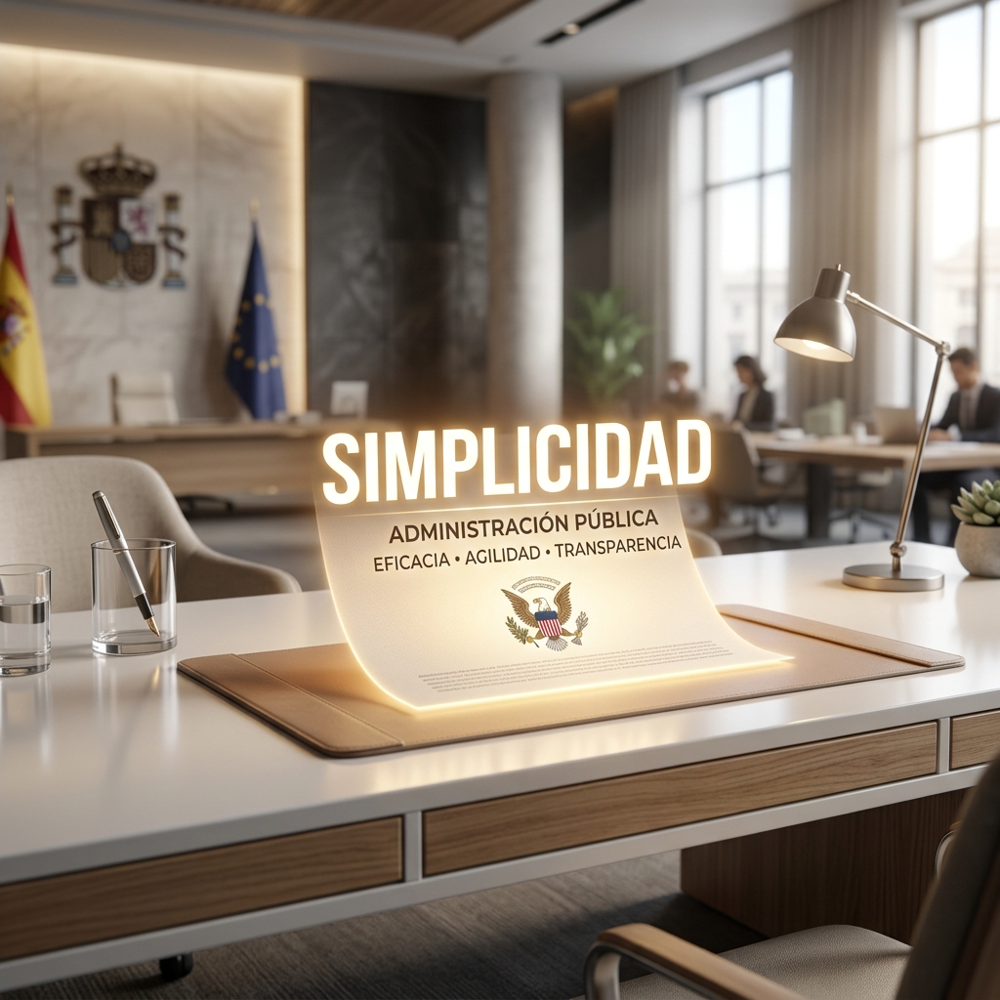
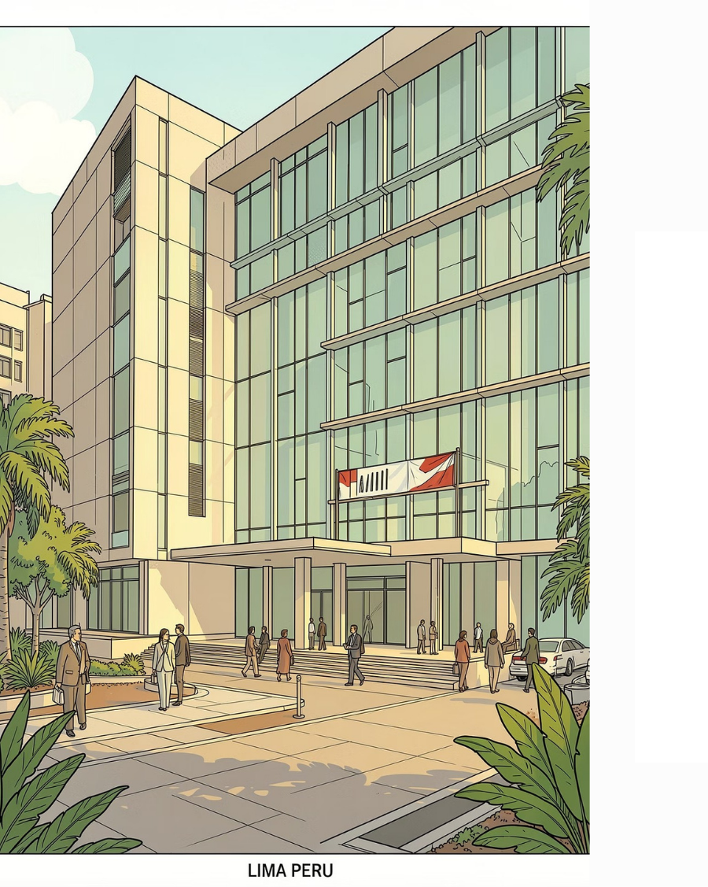
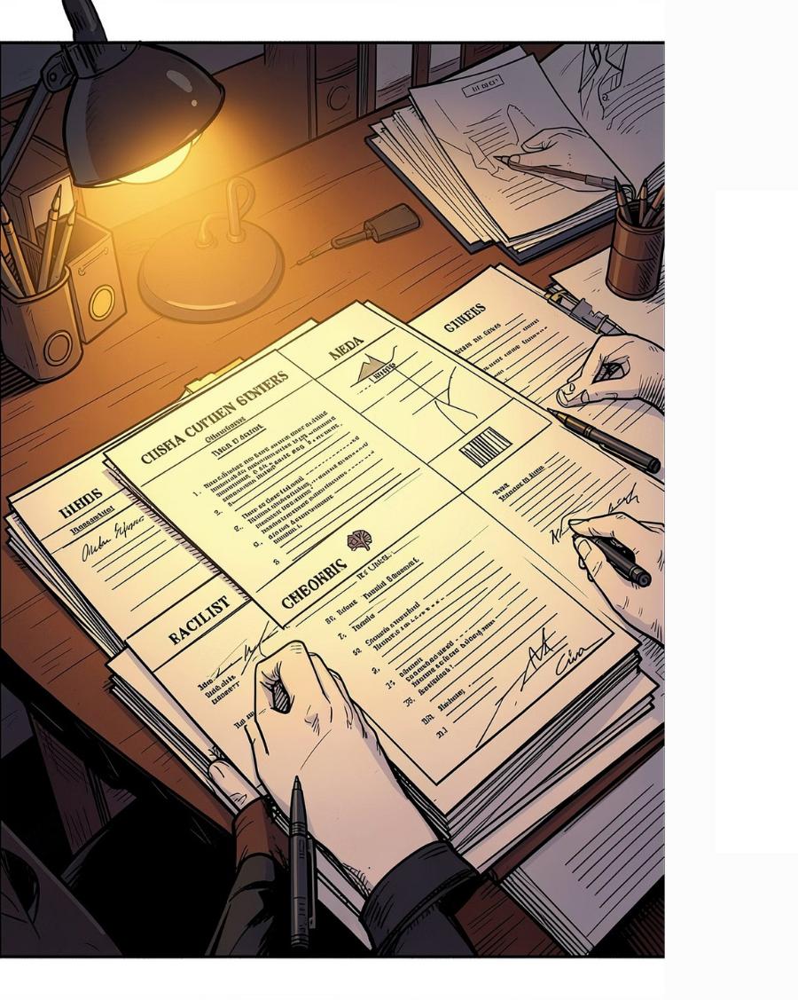
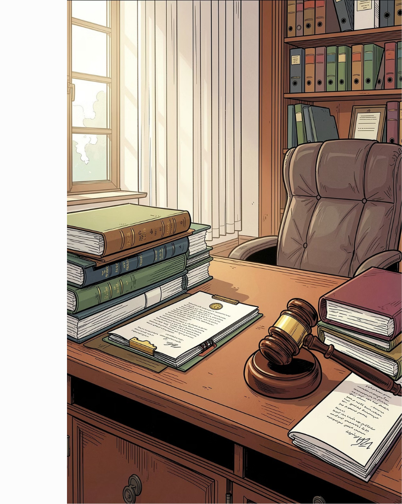
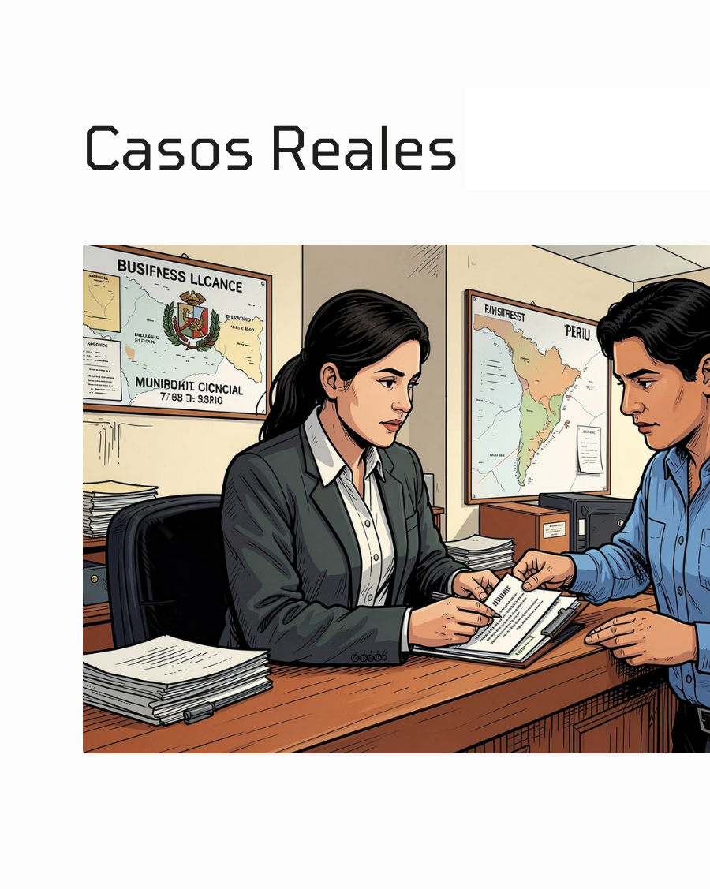
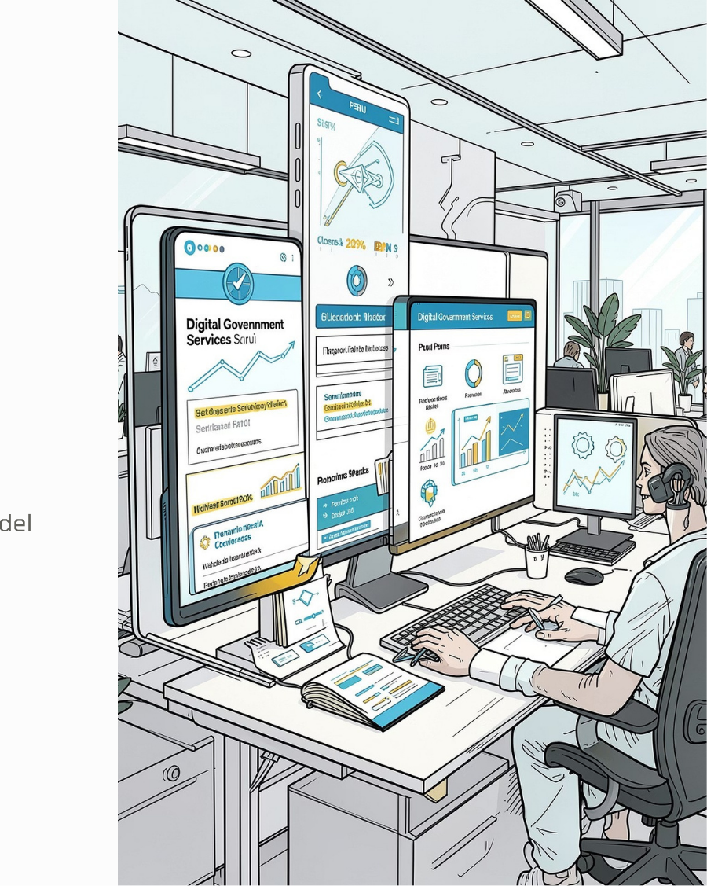

El fin de la Simplificación Administrativa es erradicar los obstáculos innecesarios.
El Estado peruano debe modernizarse para garantizar servicios rápidos, eficientes y orientados a resolver los problemas de los ciudadanos, no a crearles más dolores de cabeza.
"Imaginen pedirle permiso a su papá para ir a una fiesta y que les pida: partida de nacimiento, récord policial de buen hijo y esperar 30 días hábiles a ver si le da la gana. ¡Ese era nuestro Estado!"
La Ley le dice al Estado: Simplifica la vida.
El mensaje directo al Estado: "Oye, sé normal y no le hagas la vida imposible al ciudadano". Se acabaron los trámites laberínticos.
Crear un Estado que nos trate como clientes que merecen un buen servicio, no como estafadores que deben probar su inocencia.
Los trámites deben ser fáciles. Si un trámite requiere un manual de 80 páginas para entenderse, ¡la entidad está violando la ley!

Renovar el DNI sin llevar una copia impresa del mismo. ¡Chau montañas de papel!
El Estado ahora está OBLIGADO a creerte de buena fe. Si dices que eres soltero, te cree. Si le mientes, ¡ahí sí te cae la ley después!
Presentar una simple "Declaración Jurada" en vez de rogar por 3 certificados policiales y notariales.
El Estado no te paraliza el trámite al inicio por ser "desconfiado". Te da el pase rápido, pero luego fiscaliza sorpresivamente.
La confianza no es ciega. Si mentiste en tus papeles iniciales, te sancionan y anulan tu trámite. ¡Es justo!
El Estado tiene que resolver RÁPIDO. Prohibido pasear al ciudadano de ventanilla en ventanilla como si fuera un laberinto sin fin.
Cumplir con los plazos exactos de ley para evitar perjuicios económicos al ciudadano emprendedor.
Las computadoras del Estado DEBEN hablar entre sí. Si vas al MTC, ellos consultan digitalmente a RENIEC. ¡Prohibido pedirte la copia impresa si ellos mismos lo emiten!
La municipalidad verifica tus antecedentes judiciales consultando directo al sistema del Poder Judicial. Tú ya no eres el mensajero.
El TUPA es el menú oficial: si pides un ceviche de S/30, no te pueden cobrar S/50. Te dice exactamente qué te pedirán, cuánto cuesta y cuánto demora. Pedir cosas fuera del TUPA es ilegal.
Si pides licencia para tu bodeguita y el Estado se queda dormido y pasan 30 días... ¡Felicidades! Trámite aprobado automáticamente. El silencio juega a tu favor.
No te asustes por la palabra 'Negativo'. Si el Estado no te responde en 30 días, la ley asume que la respuesta es un NO automático. Esto sirve como tu 'salvavidas' para que puedas apelar de inmediato, en lugar de quedarte congelado esperando años una respuesta.

La simplificación administrativa es un pilar fundamental para una Administración Pública eficiente, transparente y orientada al ciudadano en el Perú.
Capítulo IV de la Simplificación Administrativa.
Toda exigencia, requisito, limitación, prohibición, cobro o condición impuesta por una entidad pública que restringe el acceso o permanencia de ciudadanos y agentes económicos.
Impacto Económico: Incrementan costos, desincentivan la inversión, reducen la competitividad y debilitan la confianza.

1. Ilegales: Impuestas sin competencia legal ni respaldo normativo. Vulneran el principio de legalidad.
2. Carentes de Razonabilidad (Irracionales): Respaldadas por norma, pero desproporcionadas o excesivas respecto al fin público perseguido.
La eliminación de barreras se fundamenta en los principios del Título Preliminar:
• Legalidad: Actuar solo dentro de las competencias.
• Eficacia: Lograr fines con medios idóneos.
• Simplicidad: Procedimientos claros sin formalidades innecesarias.
• Celeridad: Impulsar procedimientos con rapidez.

Organismo público especializado responsable de prevenir y eliminar barreras burocráticas a través de la Comisión de Eliminación de Barreras Burocráticas (CEB).
1. Resolver denuncias de ciudadanos o empresas.
2. Investigar actuaciones de entidades públicas.
3. Declarar ilegalidad o carencia de razonabilidad.
4. Ordenar eliminación (inaplicación de barreras).
5. Imponer sanciones cuando se permite.
6. Emitir precedentes para seguridad jurídica.

Municipalidades: Declaró ilegales requisitos adicionales para licencias de funcionamiento sin sustento legal. Las municipalidades adecuaron sus procedimientos.
Actividades Económicas: Eliminó requisitos no previstos reemplazables por interoperabilidad. Redujo costos para administrados.

Órgano de la PCM encargado de dirigir las políticas de modernización del Estado.
A diferencia del INDECOPI, su labor es preventiva: diseña políticas y herramientas para evitar nuevas cargas administrativas.
Superar estos retos requiere una transformación institucional y cultural en las entidades públicas.
La digitalización debe acompañarse de políticas de inclusión tecnológica, capacitación continua y fortalecimiento de infraestructura.
1. Obstáculo Principal: Las barreras incrementan costos y retrasan.
2. Control: INDECOPI protege los derechos y promueve seguridad.
3. Modernización: La SGP de la PCM impulsa el Gobierno Digital.
4. Compromiso: La simplificación debe centrarse en el ciudadano.
¡Muchas gracias por su atención!